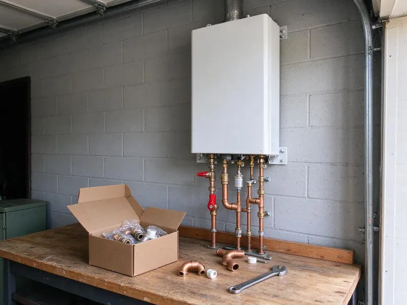

Water Softener Installation in Round Rock, TX
Get rid of scale buildup and enjoy cleaner, softer water throughout your Round Rock, TX home with a new water softener system from DFJ Plumbing.
- Fast, Reliable Service
- Expert Texas Plumbers
- Clear Pricing
- Quality Brands

Ready for Softer Water in Round Rock, TX?
Contact DFJ Plumbing today for a free consultation and discover the benefits of a whole-home water softener system.
Professional Water Softener Installation in Round Rock, TX
DFJ Plumbing specializes in professional water softener installation, helping homeowners in Round Rock, TX combat the challenges of hard water. Our certified plumbers assess your home's specific needs and recommend the ideal system to improve water quality.
Our expertise includes:
- Comprehensive water hardness testing and analysis
- Expert sizing and selection of water softener systems
- Precise plumbing for optimal system integration

Additional Plumbing Installation Services in Round Rock, TX
We install water heaters, pumps, lines, and fixtures across Round Rock, TX with careful, permitted work that passes inspection the first time.


Customers
Why Choose DFJ Plumbing for Water Softener Installation in Round Rock, TX?
Choosing DFJ Plumbing for your water softener installation means partnering with local experts who understand Texas water conditions. We are committed to delivering lasting solutions that enhance your home's water quality.
- Local Expertise, We understand the unique water hardness issues prevalent in Round Rock and throughout Texas.
- Certified Plumbers, Our technicians are highly trained and experienced in all types of water softener systems.
- Quality Systems, We install durable, high-performance water softeners from leading manufacturers.
Citywide Coverage
DFJ Plumbing proudly serves every neighborhood across Round Rock for water softener installation. Whether you're in the north, south, east, or west, our teams are dispatched efficiently to provide timely service.
Experienced Team
Our team of plumbers has extensive experience with various water softener models and installation scenarios common in Texas homes. They are adept at handling everything from basic residential setups to more complex whole-house systems.
Safety-First Approach
Before, during, and after installation, our plumbers follow strict safety protocols, protecting your home and family. We verify that all installations comply with Round Rock and Texas plumbing regulations for your peace of mind.
Trusted Certified Round Rock Plumbing Services Professionals
At DFJ Plumbing, we take pride in providing certified plumbing services throughout Round Rock, TX. Backed by leading industry credentials, our experienced plumbers combine technical skill with genuine customer care. Whether it is repair, installation, or maintenance, we follow strict safety and quality standards to deliver long-lasting results you can trust.
Call Us Now PHCC Plumbing Contractor Recognition
PHCC Plumbing Contractor Recognition Better Business Bureau (BBB) Accreditation
Better Business Bureau (BBB) Accreditation Angi Certified Pro
Angi Certified Pro ISO 9001 Quality Management Certification
ISO 9001 Quality Management CertificationReliable Water Softener Installation Services in Round Rock, TX
Whole-Home Water Softener Installation in Round Rock
We install comprehensive whole-home water softener systems designed to treat all the water entering your property. This protects every faucet, shower, and appliance from hard water damage. Our plumbers will determine the appropriate system size and type based on your household's water usage and local water hardness levels in Round Rock.

Salt-Based Water Softener Systems in Round Rock, TX
Salt-based water softeners are the most common and effective type, using ion exchange to remove hard minerals like calcium and magnesium. DFJ Plumbing specializes in the installation of these traditional systems, ensuring proper brine tank setup and regeneration cycles. We can recommend efficient models that minimize salt and water consumption for your Round Rock, TX home.
Salt-Free Water Conditioner Installation in Round Rock
For homeowners looking for an alternative to traditional softeners, we also offer salt-free water conditioner installation. These systems condition the water to prevent scale buildup without removing beneficial minerals or adding salt. While not true softeners, they are an excellent option for scale prevention and are popular in many Round Rock households.
Water Softener Replacement Services in Round Rock, TX
If your old water softener is failing, inefficient, or beyond repair, DFJ Plumbing provides expert replacement services. We can help you upgrade to a newer, more efficient model that better suits your current needs and budget. Our team handles the safe removal and disposal of your old unit and installs the new system with minimal disruption to your Round Rock, TX home.
High-Efficiency Water Softener Installation in Round Rock
Modern water softeners offer improved efficiency, using less salt and water during the regeneration process. We install a range of high-efficiency models that can lead to significant savings on your utility bills. These systems are an excellent long-term investment for any Round Rock homeowner concerned about resource consumption.
Fleck Water Softener Installation in Round Rock, TX
DFJ Plumbing is experienced in installing Fleck water softener systems, a trusted name in water treatment. Fleck control valves are known for their durability and reliability, offering various programming options to optimize performance. We ensure your Fleck system is properly configured for the specific water conditions in Round Rock, TX.
Ecodyne Water Softener Installation in Round Rock
We also install Ecodyne water softeners, which are designed for robust performance and ease of use. These systems often come with user-friendly features and provide consistent soft water results. Our plumbers are familiar with Ecodyne specifications, guaranteeing a correct and efficient installation for your Round Rock home.

Water Softener Installation for New Construction in Round Rock, TX
Planning for a new home in Round Rock, TX? Installing a water softener during new construction is an ideal time to integrate it seamlessly into your plumbing system. We work with builders and homeowners to design and install the perfect water softening solution from the ground up, preventing hard water issues before they even start.
Water Softener Installation Near Me in Round Rock, TX
If you're searching for 'water softener installation near me' in Round Rock, TX, look no further than DFJ Plumbing. Our local teams are strategically located to provide fast response times and expert service throughout the entire metropolitan area. We prioritize local homeowners, ensuring quick and efficient installations.
We understand the urgent need for soft water, especially with the hard water conditions prevalent in our region. Our commitment to the Round Rock community means we're always ready to deliver reliable water softener installation services right to your doorstep. Call us today to experience the difference.
DFJ Plumbing at a Glance
- Fully licensed plumbing team covering Round Rock, TX
- 24/7 emergency service with same-day scheduling
- Upfront, flat-rate pricing before work begins
- 4.9-star rated by 812+ Texas customers
Round Rock Map
Round Rock Information
- Population
- 130,406
- Area codes
- 512/737/254
- Service area
- Round Rock and communities within 40 miles
- Nearby
- Pflugerville, Cedar Park, Georgetown, Leander
Installing a water softener is particularly beneficial for homes in Round Rock, TX due to the naturally hard groundwater found across much of Texas, which can lead to significant scale buildup and appliance damage.
Expert Services
Trust our professionals for reliable DFJ Plumbing solutions in Round Rock, TX.
Our Specialized Plumbing Services in Round Rock, TX
At DFJ Plumbing, we provide a complete range of plumbing services across Round Rock, TX. From leak detection to full system installations, our team ensures fast, precise, and affordable service for both residential and commercial properties. Explore our core services below:


How Our Water Softener Installation Process Works in Round Rock, TX
Our water softener installation process is designed to be straightforward and stress-free for homeowners in Round Rock, TX.
Request a Quote
Contact us at (737) 405-5978 to schedule a consultation. We'll discuss your needs, test your water, and provide a detailed, no-obligation quote.
System Selection
Our experts will help you choose the best water softener system for your home, considering water hardness, usage, and budget.
Professional Installation
Our certified plumbers will install your new water softener, ensuring all plumbing and connections are done to code and function perfectly.
Frequently Asked Questions About Water Softener Installation in Round Rock
The cost of water softener installation in Round Rock, TX typically ranges from $1,500 to $4,000, depending on the system type, brand, and complexity of the installation. Factors like existing plumbing modifications and the size of your home can influence the final price. We provide transparent, upfront quotes after an on-site assessment.
With proper maintenance, a quality water softener system can last between 10 to 15 years, and sometimes even longer. The lifespan depends on the quality of the unit, the hardness of your water, and how well it is maintained. Regular servicing can help extend its life.
Salt consumption varies significantly depending on the water hardness, your household's water usage, and the efficiency of the softener system. On average, a family of four in a hard water area might use 40 to 80 pounds of salt per month. High-efficiency models typically use less salt.
We offer a warranty on our workmanship, and the water softener units themselves come with manufacturer warranties, which typically range from 5 to 10 years for the tank and control valve. We will provide you with all warranty details for your specific system after installation.
We install a variety of trusted water softener brands known for their reliability and performance, including Fleck, Culligan, Ecodyne, and Kenmore. Our plumbers can guide you through the options and help you select the best brand and model for your specific needs and budget.
While some homeowners attempt DIY water softener installation, it's highly recommended to hire a professional plumber. Proper installation involves complex plumbing connections, understanding water pressure, and ensuring code compliance. Professional installation prevents leaks, ensures optimal performance, and protects your warranty.
Installing a water softener offers numerous benefits, including preventing scale buildup in pipes and appliances, extending appliance lifespan, reducing soap and detergent usage, and improving the feel of your skin and hair. It also makes cleaning easier and keeps clothes looking brighter.
In most cases for standard residential water softener installations in Round Rock, a specific permit is not required. However, if the installation involves significant changes to your home's main water line or drainage system, a permit might be necessary. Our team will advise you on any permit requirements for your specific project.
What People Are Saying About Our Plumbing Experts?

Emily R.
I called DFJ Plumbing for plumbing repair, and the technician was fast, polite, and thorough. They explained the problem clearly and fixed it the same day. I will definitely hire them again. Highly recommended!
Plumbing Repair · Cedar Park, TX
Robert G.
The trenchless sewer replacement saved our front yard. They walked us through the camera inspection footage first so we knew exactly what we were paying for.
Sewer Line Replacement · Pflugerville, TX
Daniel K.
A pipe burst at 11 pm and they actually answered. The plumber showed up within the hour, shut everything down, and had us back to normal the next morning. Could not ask for more.
Emergency Plumbing · Cedar Park, TX
Sofia M.
Two new toilets installed in one visit, no mess left behind, and the tech even adjusted a faucet he noticed was dripping. Fair pricing and really friendly.
Toilet Installation · Round Rock, TXLaura S.
I scheduled a water heater replacement, and the team made the process smooth and affordable. The new unit works perfectly, and they cleaned up after completing the job.
Water Heater Replacement · Leander, TX
Mark T.
When our office needed drain cleaning, DFJ Plumbing provided quick, reliable service. The plumber arrived on time and made sure every drain flowed perfectly before leaving. Very satisfied.
Drain Cleaning · Georgetown, TX